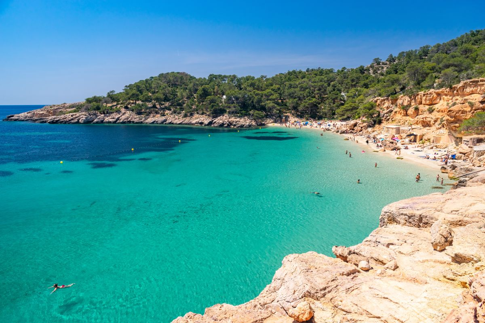
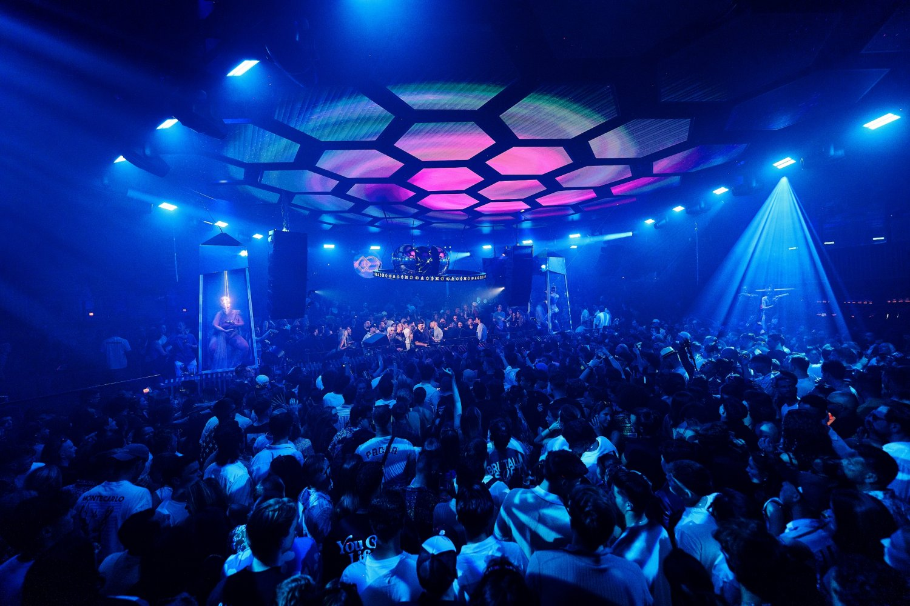

Dalt Vila
A UNESCO World Heritage site, this ancient walled town offers a mix of history, narrow streets, and panoramic views of the island and sea, making it perfect for exploration.

A UNESCO World Heritage site, this ancient walled town offers a mix of history, narrow streets, and panoramic views of the island and sea, making it perfect for exploration.

Ibiza’s beaches cater to all tastes, from lively party beaches like Playa d'en Bossa to tranquil coves like Cala Comte, offering clear waters and stunning scenery.

A world-renowned nightclub famous for its incredible parties and international DJs, embodying Ibiza’s legendary nightlife and clubbing culture.